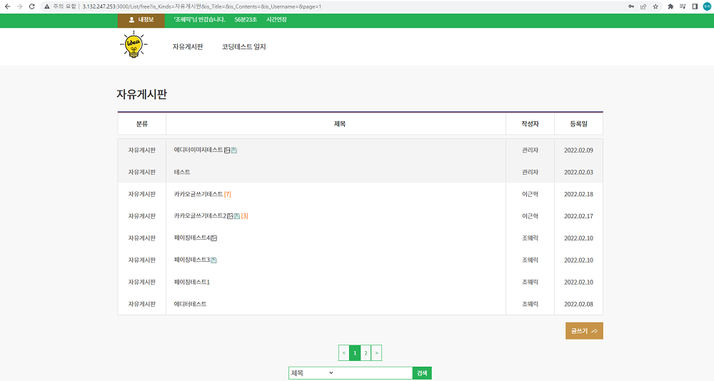
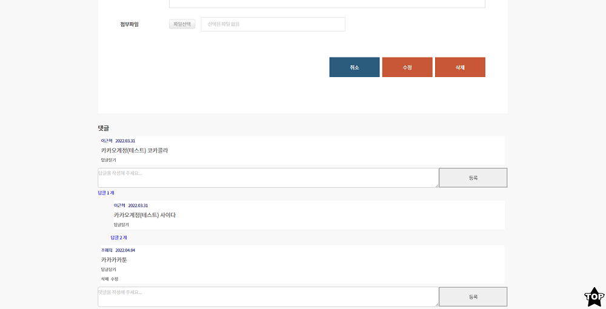
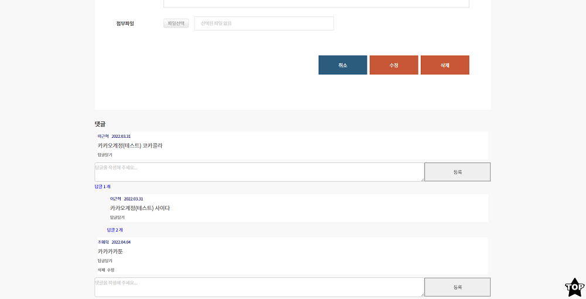

-
React를 이용한 게시판(CRUD)
ToyProject
-
Personal blog
Studying Clone Coding
-
연말정산 웹 솔루션
Company TeamProject
-
Iot를 이용한 RC카
University TeamProject
-
React를 이용한 게시판(CRUD)
#React.js#Redux#Node.js#Mysql#Aws(EC2,RDS)#Kakao Login API
Click시 웹사이트로 이동 (접속 불가시 서버가동x OR AWS 무료 기간 종료)
게스트용 로그인 정보 : guest123@naver.com / @guest123
Front End : React / Redux / Axios / Fetch / Javascript(ES6)
Back End : Node.js / AWS(EC2) / mybatis-mapper / bcrypt
DB : Mysql / AWS(RDS)
API : Kakao Login API(REST KEY)
개발 기간 : 3개월
기능 : 회원가입, 비밀번호 재설정, 일반 로그인, 카카오 로그인, 회원정보 수정, 페이징, 검색
에디터를 이용한 게시판 구현, 파일 다운로드, 파일 업로드 댓글과 대댓글 기능 구현
-프로젝트 후기-
토이프로젝트를 진행하면서 react와 node.js는 처음으로 다뤄보기 때문에
참고할 자료가 필요하여 책을 구매하여 공부하며 도움을 받고 시작했습니다. (본인 70%, 책 30%)
책에서는 클래스형 컴포넌트 사용법을 알려주어 함수형 컴포넌트인 hook 방식은 따로 학습하여 진행하였습니다.
클래스형, 함수형 둘 다 사용해본 결과 함수형이 더 간편하고 쓰기 쉬운 느낌이었습니다.
개발을 진행하면서 state관리가 불편하여 redux를 학습 후 적용을 해봤습니다.
부모와 자식 간의 prop 전달이 component가 많아지면 점점 복잡해지므로
redux와 같은 상태관리 도구들에 사용을 중요하게 생각하는 이유를 알게 됐습니다.
또 여러 가지 기능들과 component 들을 추가하면서 생기는 클라이언트와 서버 쪽에 이슈들을
해결해나가면서 많이 부족하지만, 저에게는 좋은 경험이 된 프로젝트였습니다.
(일반 로그인)
로그인화면에서 입력된 PW를 암호화해서 DB에 암호화된 PW와 비교하여 로그인처리


(카카오 로그인)
REST API 키 사용
카카오 최초 연동시 카카오 고유IDNUM에 정보와 카카오 회원정보를 DB에 저장
/ 연동 후 로그인시 DB에 고유값과 비교하여 로그인처리
관리자/사용자 권한 부여 ex) 관리자는 모든 회원에 글과 댓글을 삭제할 수 있다.
자유게시판

코딩테스트일지

게시판 검색

(일반 로그인시 내정보 옵션)
로그인된 정보는 암호화된 회원 쿠키정보를 복호화하여 가져와서 사용
로그인 타이머/ 연장버튼 기능은 페이지 새로고침시 시간(쿠키) 초기화, 새로고침이 없는 페이지 타이머 유지
타이머가 0이되면 자동 로그아웃
정보수정/탈퇴 회원정보 확인 후 수정 및 탈퇴


(카카오 로그인시 내정보 옵션)
로그인된 정보는 DB에 저장된 카카오 로그인정보를 가져와서 사용
카카오 로그아웃시 이 서비스만 로그아웃,카카오계정과 함께 로그아웃 선택 / 카카오 연동해제(회원탈퇴)

글쓰기(에디터 이미지 업로드, 첨부파일 추가)

내가 작성한 게시판 글
 

댓글 수정

다른 사용자가 작성한 게시판 글(첨부파일 클릭시 파일 다운로드)
404페이지
Redux 상태관리(코드 일부분)

-
Personal blog
#React.js#Gatsby.js#TypeScript#GraphQL#API
블로그 주소
https://lgh0801.github.io/
Front End : Gatsby(React,Node.js) / TypeScript
DB : GraphQL
API : IntersectionObserver
배포 : github
기능 : 카테고리 , 인피니티 스크롤 , 게시글 기능 구현
-프로젝트 후기-
개인 블로그를 만들 수 있는 Text 진행 강의가 있어서 공부하는 기회를 얻었습니다.
처음에는 Gatsby프레임워크에 방식과 TypeScript 사용이
익숙하지 않았으나 조금씩 이해해가며 익숙해졌습니다.
아무래도 Text 강의여서 약간의 오류들도 나왔지만, 구글링과 디버깅으로 문제를 잡아갔습니다.
Gatsby프레임워크에서 제공하는 다양한 라이브러리들에 편리함을 경험하고
저만의 개인 블로그를 운영할 수 있게 됐으며
정적 페이지를 구현할 수 있는 React프레임워크인 Gatsby와 GraphQL
또 사용 경험이 별로 없는 TypeScript를 React에서 다루어보며 긍정적인 경험이 됐습니다.
끝으로 블로그에 추가하고 싶은 기능이 있으면 조금씩 개발해 나갈 예정입니다.
-
연말정산 웹 솔루션
#Vanilla JS#Asp#Mssql#API
Front End : Vanilla Javascript
Back End : Asp
DB : Mssql
API : SBgrid Api
프로젝트 기여도: 30%
참여인원 : 4명(개발자 3명, 퍼블리셔 1명)
개발 기간 : 6개월
-프로젝트 후기-
기존 ERP 프로그램을 연말 정산용 웹 솔루션으로 새롭게 만드는 작업이었습니다.
저의 역할은 주어진 부분에 화면과 기능을 개발하는 거였습니다.
Vanilla Javascript,MsSql,Api사용에 익숙해지는 좋은 경험이 되었던 프로젝트였습니다.


-
Iot를 이용한 RC카
#Arduino#RaspberryPi(SERVER)#Android#Bluetooth
사용기술 : Arduino / Raspberry Pi(mini computer) / Android
참여인원 : 4명(아두이노:2명 라즈베리:1명 안드로이드:1명)
개발 기간: 7개월
프로젝트 기여도: 25%
기능 : RC카-스마트폰 앱을 통한 원격 조종 기능 / 자동 주차(평행주차,후면주차)기능
주행 중 물체 감지시 자동정지 기능
IoT-아두이노, 라즈베리파이 이용 IoT 서비스 구현 / 각종 센서와 네트워크(BT/Wi-FI)를 이용 Rc카 제어
-프로젝트 후기-
저가 팀에서 맡은 역할은 아두이노 코딩 및 Rc카 하드웨어 보수였습니다.
프로젝트를 진행함에있어서 하드웨어에 센서를 달고 코딩하며
RC카가 소프트웨어적으로 오류가 발생도하며 하드웨어적으로 문제가
발생시 팀원과 소통을 통하여 해결해나가며 완성을 시켰습니다.
재밌고 신선한 경험이였습니다.